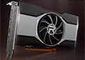
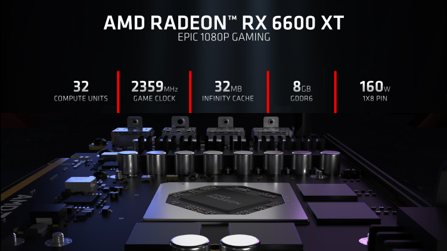

Обзор видеокарты AMD Radeon RX 6600 XT: та же скорость, те же деньги
 11 августа 2021 Иван ИвановСовершенно нормально, когда видеокарта новой серии соответствует по быстродействию предыдущей модели, стоявшей на один шаг выше. Другое дело, если остается прежней цена производительности в пересчете на один FPS — а с Radeon RX 6600 XT произошло именно это. Ну что ж, посмотрим, чем AMD может скрасить печальную картину
До сих пор ни одна из видеокарт Radeon 6000-й серии не имела прямых аналогов по быстродействию среди устройств прошлого поколения, а все семейство выглядело как своего рода надстройка поверх линейки Radeon 5000, ведь, пока в распоряжении AMD не появилась архитектура RDNA 2, компания долгое время игнорировала высший эшелон графических ускорителей. Надо отдать должное Radeon 5000 — старшие модели этой марки актуальны и сейчас. А с некоторых пор на них еще и распространяется технология Smart Access Memory (или Resizable BAR), которая бесплатно увеличила производительность GPU и, в отличие от продуктов NVIDIA, не требует обновления BIOS видеокарты.
Однако рано или поздно заслуженно популярные устройства на чипах Navi первого поколения должны уйти на пенсию. Слишком велики преимущества RDNA 2, среди которых первое место занимает аппаратная трассировка лучей. Кроме того, пора бы AMD наконец вернуться во всеоружии на рынок мобильных GPU, ведь лэптопам идеально подходит высокая энергоэффективность нового кремния, которой удалось добиться благодаря не толькоусовершенствованному техпроцессу 7 нм, но и без преувеличения прорывному решению использовать массивный интегрированный кеш третьего уровня вместо широкой шины оперативной памяти.
Последняя особенность RDNA 2 находится в центре дискуссии о младшем представителе 6000-й серии, Radeon RX 6600 XT, определяя ряд его достоинств и недостатков. По производительности новая модель является прямой заменой Radeon RX 5700 XT в иерархии ускорителей AMD и нацелена на конфронтацию с базовой версией GeForce RTX 3060.
Как наверняка заметили читатели, зарубежные обзоры Radeon RX 6600 XT вышли еще вчера, а вот российская пресса опаздывает. Дело в том, что AMD по неизвестным нам причинам решила провести дебют RX 6600 XT в два этапа: вчера были обнародованы результаты тестов тех видеокарт, которые чипмейкер распространял напрямую, а сегодня разрешено публиковать обзоры партнерских образцов. Именно с задержкой посылки от AMD связано то, что мы выпускаем обзор Radeon RX 6600 XT лишь сегодня, однако в качестве компенсации постараемся добавить кое-что новое к уже сложившейся картине.
Технические характеристики, цены
В лице Radeon RX 6600 XT чипмейкер не только представил очередную модель 6000-й серии Radeon, но и (впервые в десктопном исполнении) новый графический процессор архитектуры RDNA 2 — Navi 23 (ранее AMD уже выпустила мобильный ускоритель RX 6600M). Если взглянуть на формулу основных блоков Navi 23, можно подумать, что похожих результатов можно было достичь, взяв за основу для RX 6600 XT отбраковку кристаллов Navi 22, которыми комплектуется Radeon RX 6700 XT. Однако последний и без того не блещет энергоэффективностью по сравнению с высокими достижениями топовых моделей, а в урезанном виде и тем более. Так что Navi 22 выглядит не лучшим решением для производства видеокарт средней категории, которые обязаны отличаться от флагманов не только быстродействием, но и пониженными требованиями к охлаждению и питанию, что, в свою очередь, влияет на цену конечного продукта.
Свойства Navi 23, напротив, полностью удовлетворяют этим критериям. У AMD получился компактный кристалл с транзисторным бюджетом 11,06 млрд и площадью 237 мм2, в то время как Navi 22 занимает 335 мм2 и состоит из 17,2 млрд транзисторов. Этого хватило, чтобы разместить на чипе 32 Compute Unit’а, объединяющих в общей сложности 2048 FP32-совместимых шейдерных ALU и 128 блоков наложения текстур, а также 64 ROP. Платы Radeon RX 6600 XT комплектуются полностью функциональными чипами без деактивированных CU. Легко заметить, что формула Navi 23 значительно уступает Navi 10 в составе Radeon RX 5700 XT, который имеет 2560 шейдерных ALU и 160 текстурных блоков, и повторяет характеристики OEM-версии Radeon RX 5600. Нехватку вычислительных ресурсов с лихвой компенсируют чрезвычайно высокие — а если ориентироваться на верхнее значение, то максимальные во всей серии — тактовые частоты (не говоря уже обо всех преимуществах, отличающих вторую итерацию архитектуры RDNA, которые мы подробно обсуждали в обзоре Radeon RX 6800 и RX 6800 XT).
Однако главная примета Radeon RX 6600 XT — это новаторская организация системы памяти графического процессора. Старшие модели серии уже доказали, что AMD нашла эффективный ответ на постоянно возрастающие запросы GPU к пропускной способности VRAM. Вместо того чтобы увеличивать разрядность шины или переходить на другой тип оперативной памяти — просто дорогостоящий (HBM2) или дорогостоящий, но еще и весьма требовательный с точки зрения потребляемой мощности (GDDR6X), — в RDNA 2 удалось решить проблему таким же образом, как это сделано в центральных процессорах, с помощью дополнительного уровня интегрированной кеш-памяти, который AMD называет Infinity Cache.
На помощь опять пришел Infinity Cache, смущает лишь его объем. Navi 23 сохранил 80 % общего числа вычислительных блоков Navi 22, но кеш L3 уменьшили сразу в три раза — с 96 до 32 Мбайт, отсюда и непропорциональная экономия транзисторного бюджета (любопытно, однако, что объем L2 у Navi 22 и Navi 23 один и тот же — 3 Мбайт). Забегая вперед, скажем, что наши подозрения оправдались — производительность RX 6600 XT на самом деле упирается в подсистему памяти, и чипу Navi 23 порой остро недостает ПСП. Особенно тогда, когда дело доходит до трассировки лучей или попросту рендеринга в повышенном разрешении. Неспроста новинка позиционируется строго в качестве компаньона для мониторов Full HD. Как бы то ни было, Infinity Cache представляет собой удачное, перспективное, но еще очень молодое решение. AMD говорила о том, что кеш L3 в RDNA 2 — это не черный ящик и программы могут в какой-то степени распоряжаться его содержимым, так что у будущих игровых проектов есть потенциал для оптимизации под ограничения RX 6600 XT.